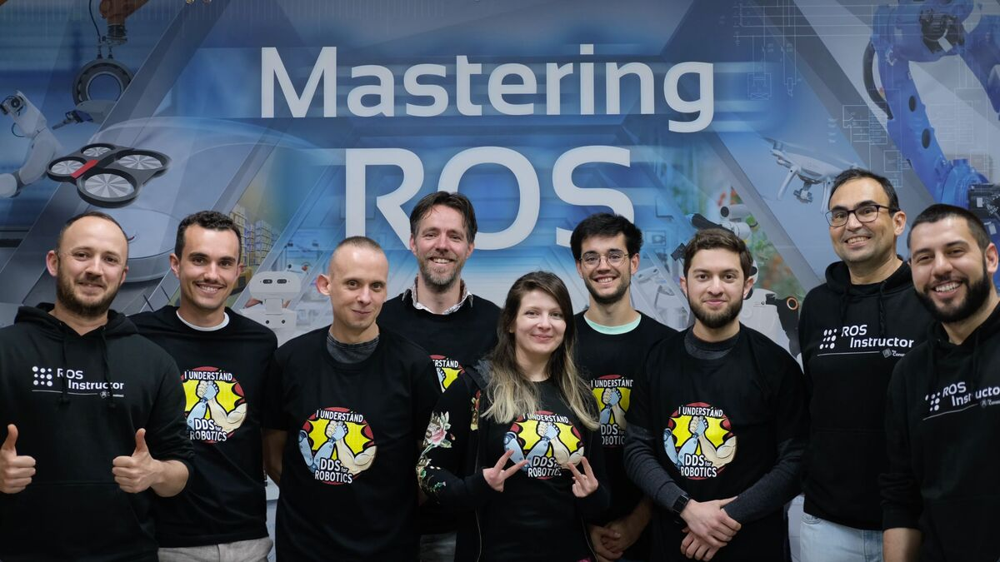

Active Learning and Development
The world of technology and engineering is ever-evolving, and I am a firm believer in the importance
of continuous learning. I stay at the forefront of industry trends and advancements to remain a valuable
contributor to the field.
DDS Middleware for Robotics Training

Working Towards BCS Chartered CEng
Sheffield Continuous Development Courses